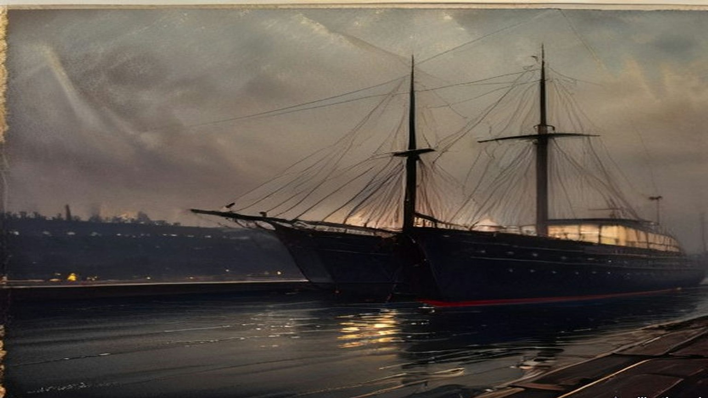
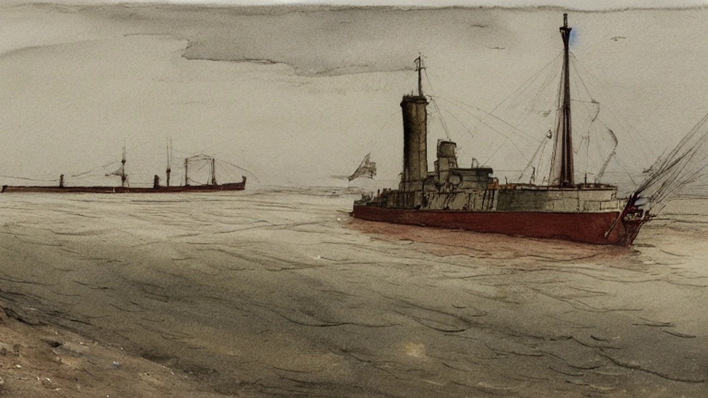
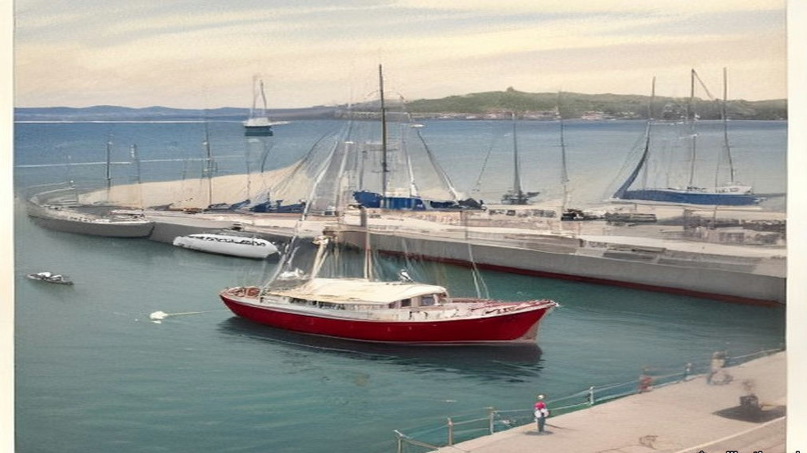
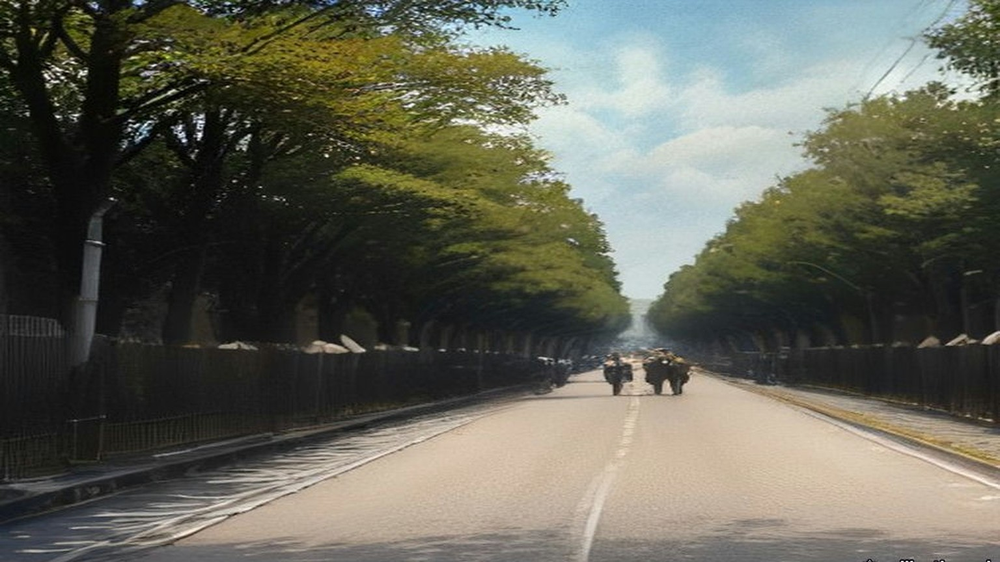
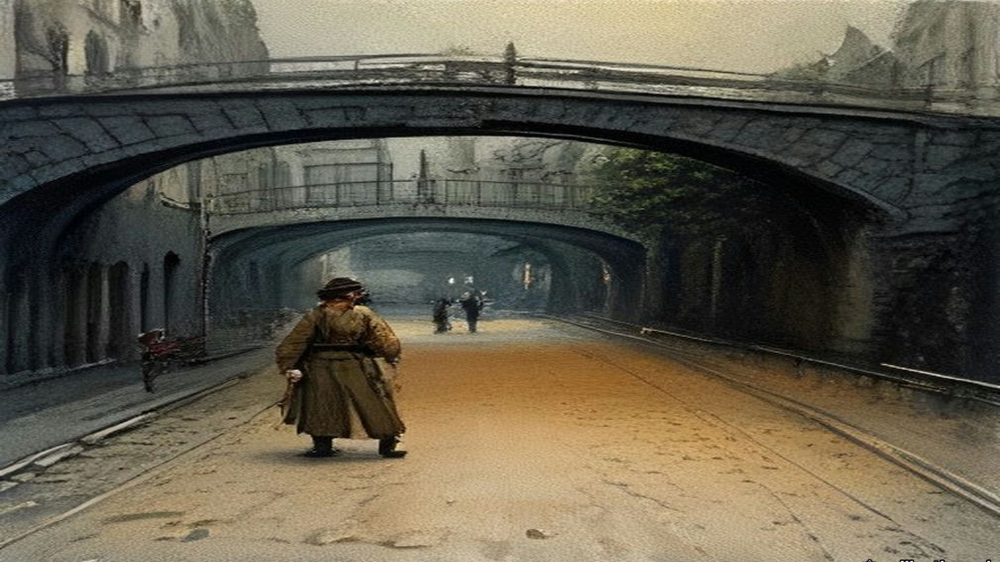
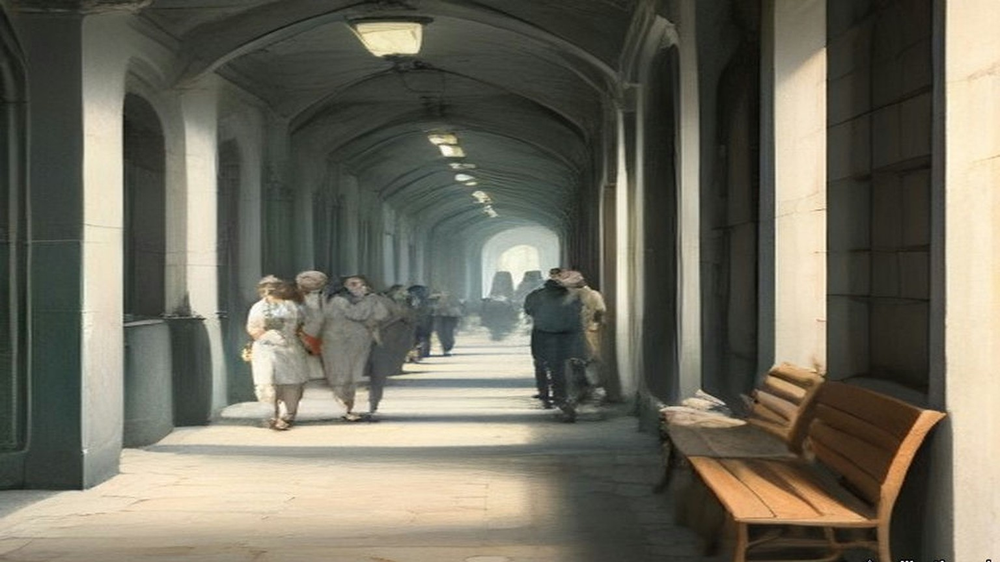
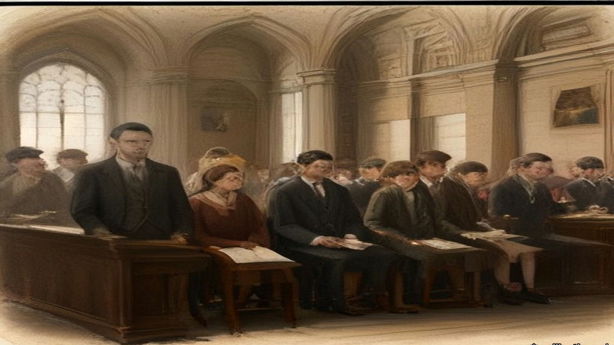

Chapter 15
Banana Skins at the Metal Bridge, 1913–1915
Belfast, Westminster, Larne, Hamburg, Howth, Clontarf and Dublin, 1913 to 1915
On 24 September 1913 the Ulster Unionist Council, meeting in Belfast, set up a fund to pay for the injuries of the Ulster Volunteer Force before any of them happened. The form of "Indemnity Guarantee" promised a man hurt in the service of Ulster, or the widow of a man killed in it, sums "not less than they would have been entitled to under the Fatal Accidents Act, the Employers' Liability Act, and the Workman's Compensation Act." Sir Edward Carson, Lord Londonderry, Captain James Craig, Sir John Lonsdale, Sir George Clark and Lord Dunleath put their names down for £10,000 each, and six more men matched them. A quarter of a million was guaranteed before the Council left the room. By the end of the week it was £387,000. Before the first of January 1914 it stood at £1,043,816.
On 4 December 1913 the King signed two Proclamations. They were made under section 43 of the Customs Consolidation Act of 1876 and section 8 of the Customs and Inland Revenue Act of 1879, and they forbade the importation of arms and ammunition into Ireland.
In a free-trading kingdom a rifle was goods, like tea or timber. It could come in at any port unless the Crown said otherwise, and now the Crown had said otherwise. The penalty sat in section 186 of the Act of 1876. A man who imported prohibited goods, or knowingly kept or hid them, forfeited "either treble the value of the goods or the sum of £100," at the choice of the Commissioners of Customs. Where three or more persons assembled to do it, the Act of 1879 raised the sum to £500. Section 202 named who could seize such goods: officers of Customs, and persons "duly employed for the prevention of smuggling."
In May 1914 the Financial Secretary to the Treasury told the House of Commons what the Customs paid. An established officer could rise to £300 a year. A watcher, the man who stood on the quay, could rise to 24 shillings a week, with two shillings more for good conduct after ten years.
* * *
The House of Commons, Wednesday, 25 March 1914
Colonel John Seely, Secretary of State for War, rose on the second reading of the Consolidated Fund Bill and asked the indulgence of the House. He said he hoped to conceal nothing.
He went through the papers presented to the House that day. In March, on information received, he had ordered troops to guard the depots at Omagh, Armagh, Enniskillen and Carrickfergus. Sir Arthur Paget, commanding in Ireland, had come over to discuss the moves and had gone back to Dublin. On the evening of 20 March a telegram reached Seely from Paget. The officer commanding the 5th Lancers reported "All officers except two, and one doubtful, are resigning their commissions to-day. I much fear same conditions in 16th Lancers. Fear men will refuse to move."
Bonar Law had read out a letter, said to come from an officer who was there, that put the words "in a blaze" into what Paget told his officers at the Curragh. Seely gave Paget's own account of the phrase. Paget said there might be a blaze, "certainly a blaze in the Press."
Brigadier-General Hubert Gough had come to London with his colonels. Seely had seen him in his own room, with Paget, the Chief of the Imperial General Staff and the Adjutant-General present. Gough said he was prepared to obey all lawful orders. He said the trouble arose "Because we thought we were going to be asked to coerce Ulster." He asked for it in writing. Seely gave him a paper. The Cabinet had discussed a draft while Seely was at the Palace, and afterwards he added two paragraphs of his own, in the sense of what he had told Gough: that the Government had no intention of using the right to protect the civil power "in order to crush political opposition." Sir John French and Sir John Spencer Ewart signed it.
Seely told the House he had made an error of judgment and had handed his resignation to the Prime Minister.
Later in the debate Asquith said, "I am not going to accept his resignation," though he agreed with Seely that it had been an error of judgment. The Government did not associate itself with the two paragraphs. Ramsay MacDonald answered that the paper was now an undertaking "minus the two paragraphs, but minus the two paragraphs it is no undertaking at all."
* * *
Larne, county Antrim, Friday, 24 April 1914
Fred Crawford had bought the rifles in Hamburg. The dealer offered him three lots. He took the dearest, fifteen thousand new Austrian rifles and five thousand German, because ammunition for them could be had in the United Kingdom or America. It was double the price of the first offer and nearly treble the second. In London Carson heard him out and stood up and shook his fist in his face, by Crawford's own account, and said, "Crawford, I'll see you through this business, if I should have to go to prison for it." Craig, who held the fund set aside for arms, agreed to the price.
Crawford had the rifles packed five to a parcel, with their bayonets and a hundred rounds for each rifle, about 75 lbs a parcel, so that nothing would have to be sorted out and put together again at the far end. The packing alone cost about £2,000. Off the Danish island of Langeland, a Danish officer carried away the ship's papers, and Crawford lay awake all night. His cargo, McNeill wrote from Crawford's manuscript, "represented about £70,000 of their money." The papers came back in the morning.
Now he stood on the Clydevalley, a Belfast Lough collier bought in Glasgow, in the Irish Sea. Canvas strips had been cut six feet long and painted with white letters on a black ground and fixed over her name at bow and stern. They read Mountjoy II, for the ship that broke the boom across the Foyle at Derry in 1689. Off Copeland Island a tender came out shouting that it had new orders. Crawford shouted back that if they were not signed by Sir Edward Carson they could take them back where they came from. They were signed. The bulk of the cargo was to go to Larne, the rest to Bangor and Donaghadee.
At 10.30 that night she came alongside the landing-stage at Larne. A triple cordon of Volunteers closed the town and harbour. About five hundred motor cars and lorries had been waiting more than two hours in drizzling rain, the drivers told only at the harbour what they had come for. Women stood at their doors and ran canteens. The men at the cross-roads across nine counties had done a full day's work first. They had orders not to go home till daybreak, and they were "not to receive a sixpence for their night's job."

Twenty miles away, a tramp steamer came furtively up the Musgrave Channel in Belfast, and the Customs men spent hours on her. Her cargo was coal. The telephone and telegraph wires out of the three ports had been "earthed." The police and coastguards were shut in their barracks under guard. At Donaghadee a coastguardsman died of heart disease.
Crawford counted 20,000 modern rifles in the cargo, 10,000 older Italian ones and upwards of 3,000,000 rounds. The Clydevalley left Larne at five in the morning to land the last of it at Bangor in daylight.
* * *
The House of Commons, Monday, 27 April 1914, and after
On the Monday the Prime Minister told the House that "in view of this grave and unprecedented outrage, the House may be assured that His Majesty's Government will take, without delay, appropriate steps to vindicate the authority of the law." Philip Morrell asked, "Is it a fact that a coastguardsman died in the performance of his duty?" The Prime Minister assented.
On 30 April Edwin Montagu, for the Treasury, was asked by how many men the Customs staff in Ireland had been increased since 4 December, and on which coasts, and how many military guns had been detained. "It would not be in the public interest to give the information which the hon. Member desires."
On 11 May Leo Amery asked when the appropriate steps would be taken. Asquith answered: "The Government have decided not to take criminal proceedings against the persons concerned in the recent incidents referred to. Other steps are being taken which I do not think it desirable for the present to make public." Keir Hardie asked whether he would advise the Home Secretary "to take a similar course with regard to women in this country."
On 18 May Birrell, answering for the Prime Minister, was asked whether any indictments had been drawn. "The reply is in the negative." On 20 May Earl Winterton asked whether the Proclamation against importing arms into Ireland would now be withdrawn. "No, Sir."
* * *
Hamburg and the North Sea, May to July 1914
In London, in the spring, Darrell Figgis had a sample rifle and the few hundred pounds that could be collected at short notice. The Irish Volunteers in Dublin had enrolled more than a hundred thousand men and had almost no arms and very little money. Roger Casement had got friends to advance £1,500 to buy rifles, sell them to the Volunteers and pay themselves back. Alice Stopford Green put up about half of it. Under her, Figgis wrote later, a number of wage-earners each guaranteed "a limited share of that liability until the final sale to the Volunteers, risking that much of absolute loss if the enterprise failed."
Figgis and Erskine Childers had tried the gunmakers of Liège first. Their rifles were too dear. On the morning of Friday, 29 May, the two men walked a few hundred yards from their hotel opposite the Hamburg railway station to the firm of Michael Magnus, Junior. The brothers Michael and Moritz Magnus sat them in an upholstered room among shell-cases and pistols and kept leaving to consult. Figgis did not know then that the German Government had warned dealers off selling arms to Ireland since Larne. He let slip that the rifles were for Mexico. The brothers looked at each other and went out again. When they came back the tone had changed.
They had come in at 9.20. It was after 12.30 when they had bought a thousand old single-shot Mauser rifles, with an option on five hundred more. Figgis signed the agreement as Edmund Farwell. Childers, under another name, sat up that night going over it clause by clause, though no money would be released until a mate's receipt was given for the cargo. Next day a shipping-house asked £300 for a tug down the river. They tried three houses in Antwerp the following week. All three asked £300.
At the start of July Figgis was in Liège again with a considerable sum of money in his pocket, to pay for the other five hundred rifles and 45,000 rounds. Every rifle had to be inspected, lock, stock and barrel. He got a staff of old men and women through the trade-union officials, and they wrapped the rifles in straw and tied them in canvas, twenty to a bundle, working stripped to the waist in the heat. In Hamburg the ammunition reached the quayside only at seven on the evening of Friday, 10 July. Figgis opened a box in the hold. The rounds were dum-dum.
The port's rules required a Customs officer to pass the cargo. A pilot could act as one. In the chart-room of the tug Figgis paid the pilot his fee and took his receipt, and then passed him three English bank-notes. The pilot went down into the hold, came up, and looked at Figgis once as he went by. The tug cast off.
On Sunday, 12 July, in a windless golden mist near the lightship at the mouth of the Scheldt, she met Conor O'Brien's black yacht, and after it Childers's white Asgard. On board the Asgard were Childers, Mrs. Childers, Mary Spring Rice, two Donegal fishermen and a young friend of Childers. The tug's crew slit the canvas bundles and the rifles went down loose into the cabin, from half past eight at night until half past one in the morning. Afterwards there was nowhere aboard to eat or sleep except on rifles or on cartridge-boxes.

* * *
Howth, county Dublin, Sunday, 26 July 1914
They had us out at Father Mathew Park in Fairview, and there was talk all along the ranks that this was it and we were going for the guns. Sunday after Sunday they'd marched us out and marched us home again. We moved off some time around ten. The police that came after us the first Sunday weren't there at all now.
They kept the pace up the whole way. Fellows in front were shouting back that it was too fast and the column kept going the same. By Sutton the sweat was running down inside my collar and the soles of my feet were burning in the boots. Seven miles and more and not a halt.
Coming round by the harbour you could see a white yacht beyond the pier, under sail, and she going against the wind. A woman was at the tiller of her in a red jersey. Somebody let a cheer and the officers stopped it. Then the word came to double, and we doubled the length of the pier with the boots ringing on the stone.
There was a line of our own lads across the pier already and men on the deck of her taking the covers off. The first box they had open was full of sticks. Oak sticks, the length of your arm. My heart went down into my stomach. I thought, is it for this we came?
Then the rifles came up out of her. They came along from hand to hand down the pier, and when one came to me it was heavier than I thought a rifle would be, a big awkward thing. The order was to pass each one on to the end of the column, and I passed mine on, and there was a man beside me with tears running down into his moustache and he not able to stop them. Some of them put a foot on the rifle they had and passed the next one along.
A boat came round under the other yachts with the coastguards in it. A row of our lads lined along the yacht with the rifles trained on them, and the coastguards turned and pulled away. There wasn't a round in one of those rifles. The boxes of cartridges went off in motors and on the Fianna's trek-cart.
Before we marched off the officer came down the line taking the name and address of every man that had a rifle. Next week at the company you could hand it in, he said, or you could keep it and pay it off weekly. I gave him my name.

The crowd at the top of the pier went wild when they saw us coming with the rifles up on our shoulders. There was an old white-haired priest among them with his hat off, waving it.
* * *
The Malahide Road, Clontarf, the same afternoon
Constable Michael Gleeson of the Dublin Metropolitan Police had been at his dinner in Green Street barracks at about two o'clock when the man in charge told him to finish it as quick as he could and take a tram to Howth. He went out to Howth on the tram and came back on another as far as the bottom of the Howth Road, at Clontarf.
The DMP men stood in two ranks across the Howth Road. On the trams behind them came soldiers, the King's Own Scottish Borderers, in khaki, with fixed bayonets. The first hundred had left the Royal Barracks at 3.35 with a hundred rounds of ball cartridge to every man.
Gleeson saw the column come down the road towards him. Before it reached the police it wheeled off to the right, into a side road. The police were given the double, and they ran across to the Malahide Road and were put across that road in two ranks. Gleeson was in the front rank. Behind the police the Borderers formed up across the road, two deep.
The column halted in front of them. Gleeson saw the Assistant Commissioner, Mr. Harrel, step forward in his civilian clothes and talk to the officer in charge of the Volunteers. He could not hear what passed between them.
Then a voice said: "Seize the rifles."

He did not know whose voice it was. He turned round. He did not go forward. He walked away down the Malahide Road. About eighteen of the police refused with him.
The rest went in. Behind his back he heard the rush and the shouting, the crack of wood on wood, the boots. The Volunteers swung their rifles by the barrels. The soldiers came up and went in with the bayonet. Somewhere near the road two revolver shots went off, and two soldiers were hit. When it was over the police had nineteen rifles, all broken in the struggle, and the men behind were going over the walls and through the hedges into the fields of Marino.
Afterwards Mr. Harrel came along the police and asked whether any of them had refused to disarm the Volunteers. Constable O'Neill said, "Here is one." Gleeson said, "Here is another." Harrel said, on the moment, "I suspend these two men. Take them home, Sergeant Dowling."
Sergeant Dowling took them back to the barracks. Gleeson did not know whether he was under arrest. He had three and a half years in the force and he had never once been reported. The next day he was dismissed.
* * *
Fingal Terrace, Howth Road, the same afternoon
Mary Burke Dowling lived with her mother at 1 Fingal Terrace, with a garden between the house and the Howth Road. When she heard the Volunteers had gone out from the city she went down to the gate. A passer-by told her guns had been got in at Howth, and that one half of the police were under arrest by the other half.
She saw the soldiers get down off the trams and run up the road to the Crescent. She was afraid there would be a fight and suggested that some of the women standing there should get in between them. The head of the column turned off before it reached them. She went up to the Volunteers at Charlemont Road and told them the soldiers had gone round to stop them on the Malahide Road. Some of them said they were allowed to do it in Belfast, and why should they not be allowed to do it.
She heard shouting from the Malahide Road and then shots. On the Howth Road the Borderers who stayed behind were drawn across the road, the front line on their knees and the back line standing, and they looked up and down the road as if taking the measure of it. She took her mother with her and went down to them.
"Do you intend to shoot these men?" she asked, meaning the Volunteers, if they came back that way.
"Yes, we do," they said. Several of them told her to get out of the way if she did not want to get shot herself. She told them they were a pack of cowards. A tall officer came out in front and said to her, "They will shoot if they get the order." She told him that she was an Irishwoman, and was no more afraid than were Irishmen.
When no Volunteers came back she went home through the empty house next door. There were young men in among the houses hiding rifles. Somebody pointed out a man to her who had a bayonet stab and was afraid to go to hospital in case he would be arrested.
* * *
Marino and Fairview, that evening
We went over the wall of the O'Brien Institute and down across the fields with the rifle held out in front of me through the hedge. My shoulder was raw from it. Where the ditches were, there were rifles lying in them that lads had dropped running, and we gathered them up as we went. A man came past me with eight of them on him, and he shouted, "You'll find four more in that ditch, I cannot carry any more."
We left them in houses and cottages, wherever there was a door open to us.
Word came over the fields not to go down to Fairview. Up at the road you could see the police yet, and Mr. Harrel standing with them, waiting on somebody to come down with a rifle.
* * *
Bachelor's Walk, Dublin, about half past six
Alfred Byrne, alderman of the Dublin Corporation, took his bicycle when he heard the rumours and went down into Talbot Street, where it crosses Gardiner Street. The soldiers were marching back into the city. Behind them came a crowd of children, singing, jeering and jagging at them, a good many of them from his own neighbourhood. He got off and walked the bicycle in between the children and the soldiers and tried to turn the children back.
In Earl Street somebody threw a bundle of bananas. Whole bananas, and banana skins. The streets were asphalt or wood blocks or stone setts, the side streets all paved. The only loose stones he knew of were in Portland Row, a mile behind.
In O'Connell Street the rear rank broke away and made thrusts at the people with their bayonets. He heard an officer shout "Halt," and run after them, and call, "Come back, you So-and-so." Byrne tried to speak to the officer and the officer brushed him aside.
He kept ten yards behind the rear rank, the children twenty yards behind him. At O'Connell Bridge two trams had come in together from the Phoenix Park and were letting down their people at the terminus. The footway along the river was packed with men and women coming from the Park or going to it. They stood and looked.
The soldiers marched on up the quay to the Metal Bridge. At the corner of Liffey Street, by Kaiteher's shop, without a word of warning, they turned round, and in the space of a second the front men were down on one knee with their rifles pointed back along the quay. Byrne had just time to jump off the bicycle and throw it against the railings of the bridge.

A motor car was behind him. It stopped for a second. Some words passed between the chauffeur and an officer, and the kneeling men stood up and let it through. As soon as it was past they went down on the knee again.
He heard one shot. Then two or three. Then a volley.
He was standing on the step of the bridge. Across the corner a woman was sitting on the ledge of the shop window with her back against the glass. It was Mrs. Mary Duffy, who lived at 20 Lower Liffey Street, a few doors round the corner. When the firing stopped he saw her take one step out from the window, as if to pass by the soldiers.
He thought it was blank cartridge. Even with blank she was too near, for the nearest rifle was not three yards from her. He ran across the corner to pull her round out of the way.
He had her by the arm when the next volley went.
She threw up her hands. Her knees went from under her and she was down on them on the flags with her weight hanging off his arms, and he was down on his own knees beside her trying to keep her up. Two men came running from the far corner of Liffey Street, from O'Brien's corner, to help him. Two soldiers went for them with the butts of their rifles. A rifle butt came round over Byrne's shoulder. It missed him. He almost got it.
Then the firing stopped.
He shouted for help. He and two other men lifted Mrs. Duffy between them and carried her along Liffey Street towards Jervis Street Hospital. It was not much more than five minutes' walk. His bicycle lay where he had left it, out on the road. Behind him came eighteen or twenty more people, carried or walking, to the same door.
Twenty-one soldiers had fired twenty-nine rounds into the people at short range. Byrne had seen no mob. He had seen forty or fifty children of eight to sixteen and the Sunday crowd off the trams. There was not a policeman on the quay.
* * *
Jervis Street Hospital, that evening
James Lanigan, house surgeon, had them coming in at the door from seven o'clock. Patrick Quinn of 1 Gardiner's Lane was brought in about seven. He was dead. There was a small hole in the back of his right thigh and a larger one in the front. One bullet had gone through it and cut the femoral artery.
Mrs. Duffy was dead when they laid her down. His colleague Frank Byrne found later a small wound in her belly on the left side, low, near the point of the hip bone, and a large torn wound two and a half inches square low in her back where the bullet had come out. It had cut the iliac artery and broken the sacrum.
James Brennan of 7 Lower Buckingham Street came in about half past seven. He was eighteen. There was a clean puncture in the front of his right thigh five inches above the knee, a cut six inches long down the back of the thigh, and a smaller wound under the buttock. The front wound ran through into the middle of the long cut behind. A bullet had made the one and a bayonet the other. The femoral artery was severed. He was in a state of collapse. He lived about an hour, and at half past eight he died.
They kept fifteen of the wounded in the wards. The names went into the book. Luke Kelly, aged ten, schoolboy, of Marlborough Street, bullet wound in the back. John Conrad, eleven, schoolboy, of Lower Abbey Street, bullet wound in the leg. Peter MacDowell, fifteen, messenger. Christie Maher, fifteen, paper-boy, bullet wound in the right foot. Mary Rowan, sixteen, of Addison Road, Fairview, bullet wounds in both legs. Mollie Dillon, eighteen, of the North Strand. Mrs. Scully of Chatham Row, a bayonet wound. Sebastian Pidgeon, as the list had him, forty, printer, of the Coombe, a bullet wound front and back of the right leg.
Patrick Farrell, going on sixteen, a gardener from Ballsbridge, had been to the Volta picture house in Mary Street with another boy, Jack Connor. They came out between twenty and twenty-five past six, and in a shop at the corner of Liffey Street Connor bought two halfpenny cakes. They ran down to look at the crowd, and Farrell lost him. He went in among the people to find him. When the soldiers turned at the Metal Bridge he was making for a hall door. He heard one shot, and the bullet caught him in the arm.
A man he did not know took him up on his shoulders and carried him to the hospital. They dressed the arm and sent him home. The man paid his tram fare to Ballsbridge.

* * *
The House of Commons, Monday, 27 July 1914
Augustine Birrell, Chief Secretary for Ireland, had four questions on land purchase on the paper that day. The maps for the Sugrue estate at Ballinskelligs had not yet been lodged with the Congested Districts Board. The Board would not inquire into the losses of the tenants at Keel, county Kerry, who said they had lost land and cattle for six years through the landlord's neglect of the sea banks. The Board's offer for James Foy's estate in West Mayo had been accepted, and its offer for Mark Foy's had not.
Then John Redmond rose with a private notice question about the shocking occurrences in Dublin.
Birrell read out the times. The Assistant Commissioner had telephoned the Under-Secretary about two o'clock. The Under-Secretary reached the Castle about a quarter to three and sent for him, and he did not come. Birrell read the Under-Secretary's minute, which said "forcible disarmament of the men now marching into Dublin with these arms should not in all the circumstances be attempted." It was dated the 27th. The military had been requisitioned by the Assistant Commissioner entirely on his own responsibility. "Thirty-one rounds in all were fired almost simultaneously." There were three killed and thirty-two injured. "The Assistant Commissioner has been suspended pending an inquiry."
"He ought to be hanged!" said Willie Redmond.
"Ministers ought to be hanged," said Lord Robert Cecil.
"They are the murderers," said a member whom the reporters did not name.
Joseph Devlin asked whether 5,000 armed men with five machine guns had marched through the main streets of Belfast on the Saturday. Birrell said it was the fact, and that "No orders of any kind were given to the police to hold up the Volunteers or to demand the surrender of their rifles and machine guns." The next business on the paper was headed "Austria and Servia."
In the evening Redmond moved the adjournment. He said he had himself been against prosecuting the Larne gun-runners. He read the letter he had written to Birrell on 30 June against the Proclamation. "The police in the South and West might not be so passive as they were in the recent affair at Larne, and there might be serious conflicts, and even loss of life." He read the Irish papers' account of Harrel at the Malahide Road: "I must have these guns," and "The military with me have ball cartridge, and we intend, if necessary, to use it." He held up a London morning paper with a picture of the Ulster Volunteers marching through Belfast on the Saturday, rifles on their shoulders.
Birrell said Harrel was well known to him, "the son of one of my most intimate friends in Ireland, a colleague of mine on the Congested Districts Board." He had gone against what the Government, rightly or wrongly, had decided in Ulster. "I want to know what difference there is in one road in Belfast, or Monaghan, or Tyrone, and a road that leads from them into Dublin."
Bonar Law said the Under-Secretary's minute was written "to save their own precious skin." Birrell read the Brigadier's report that "Practically all officers and men were hit." Late in the evening Lord Robert Cecil moved that the question be now put. The House divided, 217 for and 249 against. At eleven o'clock the motion for the adjournment lapsed without the question being put.
Two days later Birrell told the House that the minute had been written shortly before five, and that a bicyclist had carried it to Harrel, who received it at about a quarter to six.
* * *
The Four Courts, Dublin, Monday, 10 August 1914
Lord Shaw of Dunfermline, chairman of the Royal Commission, sat with Mr. Justice Andrews and Mr. Justice Molony on the third day of evidence. Britain had been at war with Germany for six days.
Serjeant Sullivan, for the Corporation, had told them that some of his witnesses were army reservists. They had been called to the colours and had left Dublin, and he did not know their addresses. The doctor at Jervis Street who drew up the list of the wounded had volunteered for service in Belgium. The list was read into the record by agreement.
Shaw heard the soldiers. Private Rosewell said he fired at the legs of the crowd. Private Andrew Baird, twenty-one, from Dundee, said he fired from the shoulder, at the people in front.
"Did you fire at human beings in front of you?"
"They were all human beings in front of me."
"What did you fire at?"
"Very low, sir."
He heard Miss Dowling and the boy Farrell, who held up the sleeve of his coat to show the hole over the bandage. He heard Alderman Byrne under cross-examination by Mr. Hanna, K.C. Counsel suggested he had been leading the mob. "There was no mob there," Byrne said. Shaw asked him whether, if there had been a few policemen, the crowd could have been kept in hand. Byrne said that with ten or even six policemen they would have kept the crowd back.
Late in the day Constable Gleeson was sworn. He told them about his dinner, and the tram, and the voice that said "Seize the rifles." He was asked why he had refused.
"I considered it an illegal order," Gleeson said. "I had seen where they were allowed to march in the North of Ireland."
He told them he was not a native of the district, that he had three and a half years' service and had never been reported, and that he was willing to serve loyally again. Shaw said this was a case for consideration by the authorities.
"Thank you, my lord," said Gleeson.

The Commission signed its report on 4 September, and the Stationery Office sold it for twopence.
The rifles, it found, had been landed against the Proclamation. But the Act let only Customs officers, or persons employed to prevent smuggling, seize them, and neither police nor soldiers had been so employed. "The whole transaction was, then, illegal from beginning to end." It found no evidence that the Government had treated one part of Ireland differently from another. What difference there had been came from Harrel alone. It quoted the eighteen constables, who had refused because the disarming "could surely not be legal as it had not been done in Belfast." It found that the soldiers "through great provocation got out of temper and partly out of hand," that a landaulette had passed quietly through troops and crowd, and that some witnesses spoke of no more than the throwing of banana skins. "The firing, in short, was at large, without distinction of age or sex, and was at short range." Many of the victims were "passive spectators or ordinary pedestrians." The Commissioners wrote that "It is not properly in our province to do more than to commend all these cases to the sympathetic consideration of the Lords of the Treasury."
* * *
Dublin and Westminster, September 1914 to February 1915
On 10 September Dr. Esmonde asked whether Constables Gleeson and O'Neill had been reinstated. Birrell said, "I have no doubt that the reinstatement of these men will very shortly take place, but I cannot say more at this moment."
Sylvester Pidgeon, the printer from the Coombe with the bullet through his right leg, died of his wounds on 28 September. He left a widow and five children, the youngest three months old and the eldest eleven. In November a concert was held at the Mansion House in aid of the family.
On 17 November Laurence Ginnell asked why nobody had been tried for the deaths at Bachelor's Walk. T. W. Russell answered for the Irish Office. "In view of the open verdict returned by the Coroner's jury and of all the circumstances set forth in the Report of the Royal Commission appointed to inquire into them, it is not proposed to take any further action in the matter." On compensation, "that question is now before the Treasury."
On 4 February 1915 the Committee of Supply took a Supplementary Estimate of not more than £2,500 for the Dublin Metropolitan Police. Russell explained it. Part was a rise in police pay under an Act of the last session. The rest was "compassionate grants in respect of persons killed and injured in July last." An English member asked whether any of the money went to the tenants of the Corporation buildings whose rooms the police had wrecked in the strike of 1913. Russell said no. "£800 has been paid to those who suffered from the incident at Bachelor's Walk." The Committee agreed to the vote.
Important names
- Carson, Edward (3 mentions in this chapter): Dublin-born barrister, Solicitor-General, and leader of the Ulster Unionist Council.
- Casement, Roger (1 mentions in this chapter): British consul who exposed atrocities in the Congo and Putumayo, later executed in 1916 for his role in the Irish Easter Rising.
- Craig, James (2 mentions in this chapter): Ulster Unionist leader and first Prime Minister of Northern Ireland.
- O'Connell, Daniel (2 mentions in this chapter): Irish political leader who led the campaigns for Catholic Emancipation and the Repeal of the Union.
- Russell, Lord John (3 mentions in this chapter): British Whig Prime Minister during the height of the Irish Famine (1846–1852).
Sources
- Report of the Royal Commission on the circumstances connected with the landing of arms at Howth on 26th July, 1914 [Cd. 7631], signed 4 September 1914 by Lord Shaw of Dunfermline, W. D. Andrews and T. F. Molony, price 2d., digitised by the University of Southampton Library (the Proclamations of 4 December 1913 under s. 43 of the Customs Consolidation Act 1876 and s. 8 of the Customs and Inland Revenue Act 1879; s. 186, "treble the value of the goods or the sum of £100"; the £500 penalty where three or more assemble; s. 202, "duly employed for the prevention of smuggling"; about 1,000 Volunteers at Howth; Harrel's telephone calls; the fifty Borderers and about seventy police on the Malahide Road; about nineteen rifles seized; bayonet wounds and clubbed rifles; "about two revolver shots were fired, not by the Volunteers, but by some bystanders unknown"; the crowd "of insulting demeanour" in Talbot Street, Earl Street and Sackville Street; "through great provocation got out of temper and partly out of hand"; the bayonet through a shop door; about thirty men lined across at Liffey Street, "four or five men kneeling"; the landaulette and the banana skins; "Twenty-one men discharged their rifles at the crowd. Twenty-nine shots were fired"; three killed, at least thirty-eight injured, fifteen detained; Mary Duffy 50, Patrick Quinn 46, James Brennan 18; "at large, without distinction of age or sex"; "fundamental illegality"; "illegal from beginning to end"; no evidence of discrimination by Government; the eighteen constables and "it had not been done in Belfast"; "passive spectators or ordinary pedestrians"; the commendation to "the Lords of the Treasury"). https://archive.org/details/op1256257-1001
- Royal Commission on the landing of arms at Howth, Minutes of Evidence [Cd. 7649], 1914, same digitisation (first sitting Friday 7 August at the Four Courts; third sitting Monday 10 August. Serjeant Sullivan's opening: the 100 men leaving the Royal Barracks at 3.35 "with one hundred rounds of ball cartridge per man," "none of His Majesty's troops should be kept back unnecessarily at this particular time," no policeman at Bachelor's Walk. Sullivan on 10 August on reservists "summoned to the colours" and the Jervis Street doctor who "has volunteered for service in Belgium." The Jervis Street list, read by agreement, with names, ages, addresses and wounds, total thirty-eight. Miss Mary Burke Dowling, Q. 1234–58: "one-half of the police were under arrest by the other half," "they are allowed to do it in Belfast," "Do you intend to shoot these men," "Yes, we do," "a pack of cowards," "They will shoot if they get the order," "I was an Irishwoman," the men hiding rifles and the man with the bayonet stab. Alderman Alfred Byrne, Q. 1386–1479: the bicycle, Gardiner Street, "singing, jeering and jagging," "Come back, you So-and-so," the bananas, the paving and Portland Row, the two trams from the Park, Kaiteher's corner, "the front men were on the knee with pointed rifles," the bicycle thrown against the Metal Bridge, the motor car let through, "one shot, then two or three immediately after, and then a complete volley," Mrs. Duffy on the window ledge, "blank cartridge," "the nearest rifle was only three yards away," "she threw up her hands and went down on her knees," the rifle butt "went over my shoulder; I did not get it. I almost got it," "not much more than five minutes' walk," "eighteen or twenty other people," "There was no mob there," children "from eight to sixteen," "ten or even six policemen." The inquest depositions of 28 July before Coroner Louis A. Byrne: James Lanigan on Brennan, brought in about 7.30, "state of collapse," the thigh wounds, femoral artery severed, died about 8.30, bullet and bayonet; Frank M. Byrne on Mary Duffy and on Patrick Quinn. Patrick Farrell, Q. 1577–1603: "Going on 16," Jack Connor, the Volta picture house, "two halfpenny cakes," "the bullet caught me there in the arm," the man who carried him on his shoulders and "paid my tram fare home to Ball's Bridge." Private Herbert Rosewell, Q. 1633: "I fired at the legs of the crowd." Private Andrew Baird, Q. 1683–1716: twenty-one, Dundee, "They were all human beings in front of me," "Very low, sir." Constable Michael Gleeson, Q. 1717–52: dinner at about two at Green Street, the tram to Howth, the two ranks, the double to the Malahide Road, "Seize the rifles," about eighteen refused, "Here is one," "Here is another," "I suspend these two men. Take them home, Sergeant Dowling," suspended that evening and dismissed the next day, "I considered it an illegal order. I had seen where they were allowed to march in the North of Ireland," three and a half years unreported, the Chairman's "a case for consideration by the authorities," "Thank you, my lord"). The OCR text drops part of Gleeson's evidence; those answers were read from the page image (printed p. 53, p. 57 of the PDF). https://archive.org/details/op1256258-1001
- Ronald McNeill, Ulster's Stand for Union (London, 1922), chapters XVII to XIX, which print and paraphrase Colonel F. H. Crawford's manuscript narrative. The chapter relies on McNeill's transcription for every Crawford quotation (the Indemnity Guarantee of 24 September 1913, the Fatal Accidents Act wording, the £10,000 subscribers, £387,000 in a week, £1,043,816 before 1 January 1914; the three Hamburg offers and "double the price of the first and nearly treble that of the second"; Craig "in control of the fund ear-marked for the purchase of arms"; "Crawford, I'll see you through this business, if I should have to go to prison for it"; parcels of five rifles and 100 rounds a rifle, about 75 lbs, packing about £2,000; Langeland and "about £70,000 of their money"; the Clydevalley, a Belfast Lough collier bought in Glasgow; the canvas strips; the tender off Copeland and the signed orders; alongside at Larne at 10.30 on 24 April; the triple cordon, about five hundred vehicles, drizzling rain, the women's canteens, "not to receive a sixpence for their night's job"; the coal steamer in the Musgrave Channel; the wires "earthed"; the coastguardsman's death from heart disease at Donaghadee; 20,000 modern rifles, 10,000 Italian, upwards of 3,000,000 rounds; leaving Larne at 5 a.m. for Bangor). https://archive.org/details/ulstersstandforu00mcneuoft
- Darrell Figgis, Recollections of the Irish War (London, 1927), chapters II and III (Carson "where rich men filled his coffers we had to fare by our wits"; "Only a few hundred pounds could be collected"; Mrs. Green as treasurer and the wage-earners' guarantee "until the final sale to the Volunteers"; Liège too dear; Michael and Moritz Magnus; Mexico; 9.20 to after 12.30; "Edmund Farwell"; the mate's receipt; a thousand rifles with the option of five hundred; the £300 tug in Hamburg and Antwerp; Liège at the end of June, 45,000 rounds, the trade-union staff, straw and canvas, twenty apiece; the ammunition at the quay near seven on the Friday, "dum-dum"; the pilot and "three English bank-notes"; Sunday 12 July, the mist, O'Brien's black yacht and Childers's white one, the crew, the bags slit, 8.30 to 1.30, nowhere to sleep "except on rifles or on cartridge-boxes"; Mrs. Childers in a red jersey at the helm; men in tears and the foot on the rifle; the coastguard boat; Harrel "in civilian attire"). https://archive.org/details/recollectionsofi00figg
- Bureau of Military History, Witness Statement 53, Bulmer Hobson, 5 November 1947, "The Gun-running at Howth and Kilcoole" (membership of 100,000 to 150,000 and "very little funds"; Casement's friends advanced 1,500, the OCR drops the currency sign; Mrs. Green "about half"; arms to be sold to the Volunteers "to reimburse the subscribers"; the Sunday route marches; the police absent on 26 July; about eight hundred men at Father Mathew Park; the two hundred oak batons; the fast pace, seven or eight miles without a stop; 900 rifles and 26,000 rounds; the officers to note names and addresses, with the option of handing the rifles in "or of retaining them and paying for them by small weekly instalments"; the two-deep line of soldiers and about eighty police; the dispersal through the Christian Brothers' grounds at Marino; Harrel at Fairview; nineteen rifles; £1,000 from America the day after). Read through the Wayback Machine copy of the Military Archives file, as the live site redirected. https://web.archive.org/web/2022/https://www.militaryarchives.ie/collections/online-collections/bureau-of-military-history-1913-1921/reels/bmh/BMH.WS0053.pdf
- Bureau of Military History, WS 360, Seamus Daly (the route marches "always out to the coast"; moving off around ten; the yacht against the wind; the cheer stopped; doubling down the pier; "to our dismay ... large wooden batons"; the crowd and the white-haired priest waving his hat; the police lining the road at Raheny; the wall of the O'Brien Institute; rifles in ditches; "You'll find four more in that ditch, I cannot carry any more"; rifles dumped "in various houses and cottages"). WS 157, Joseph O'Connor (rifles passed man to man; the Malahide Road). WS 1670, Seumas Kavanagh (the Fianna trek-cart; batons about eighteen inches long). WS 267, Seamus Pounch, and WS 327, Patrick Egan, consulted. Same Wayback route, files BMH.WS0360, WS0157, WS1670, WS0267, WS0327.
- House of Commons Debates, 25 March 1914, "Colonel Seely and the Cabinet," 5th series, vol. 60, cc. 392–458 (Seely's statement; the depots; Paget's telegram, "All officers except two, and one doubtful"; "a blaze, certainly a blaze in the Press"; Gough "prepared to obey all lawful orders," "Because we thought we were going to be asked to coerce Ulster"; "in order to crush political opposition"; the draft discussed by the Cabinet while Seely was at the Palace and the two paragraphs he added; French and Ewart signing; Seely's resignation; Asquith, "I am not going to accept his resignation"; Ramsay MacDonald, "minus the two paragraphs it is no undertaking at all"). https://api.parliament.uk/historic-hansard/commons/1914/mar/25/colonel-seely-and-the-cabinet
- House of Commons Debates, 27 April 1914, "Landing of Arms and Ammunition," vol. 61, cc. 1347–8 (Asquith's "grave and unprecedented outrage"; Morrell and the coastguardsman). https://api.parliament.uk/historic-hansard/commons/1914/apr/27/landing-of-arms-and-ammunition ; 30 April 1914, "Customs (Ireland)," vol. 61, cc. 1861–2 (Montagu, "not be in the public interest"). https://api.parliament.uk/historic-hansard/commons/1914/apr/30/customs-ireland ; 11 May 1914, "Gun-running (Ulster)," vol. 62, cc. 710–1 ("decided not to take criminal proceedings"; Keir Hardie). https://api.parliament.uk/historic-hansard/commons/1914/may/11/gun-running-ulster ; 18 May 1914, "Importation of Arms," vol. 62, cc. 1573–4 ("The reply is in the negative"). https://api.parliament.uk/historic-hansard/commons/1914/may/18/importation-of-arms ; 18 May 1914, "Customs Officers and Watchers," vol. 62, c. 1584 (£300 a year; watchers to 24s. a week and 2s. good conduct pay after ten years). https://api.parliament.uk/historic-hansard/commons/1914/may/18/customs-officers-and-watchers ; 20 May 1914, "Importation of Arms," vol. 62, c. 1934 (Winterton; "No, Sir"). https://api.parliament.uk/historic-hansard/commons/1914/may/20/importation-of-arms
- House of Commons Debates, 27 July 1914, vol. 65: "Land Purchase (Ireland)," cc. 929–30 (Sugrue, Rae and Foy estates) https://api.parliament.uk/historic-hansard/commons/1914/jul/27/land-purchase-ireland ; "Assistant Police Commissioner Suspended," cc. 934–6 (Birrell's times and the minute dated 27.7.14; "Thirty-one rounds"; three killed and thirty-two injured; the suspension; William Redmond, Lord Robert Cecil and "They are the murderers") https://api.parliament.uk/historic-hansard/commons/1914/jul/27/assistant-police-commissioner-suspended ; "Volunteer Forces," c. 936 (Devlin; "No orders of any kind were given"; next item "Austria and Servia") https://api.parliament.uk/historic-hansard/commons/1914/jul/27/volunteer-forces ; "Motion for Adjournment," cc. 1022–66 (Redmond against prosecuting the Larne men; his letter of 30 June; "I must have these guns," "ball cartridge"; the Belfast photograph; Birrell on Harrel, "the son of one of my most intimate friends," "one road in Belfast"; the Brigadier's report read by Birrell; Bonar Law, "to save their own precious skin"; Cecil's closure, Ayes 217, Noes 249; the motion lapsing after eleven "without Question put"). https://api.parliament.uk/historic-hansard/commons/1914/jul/27/motion-for-adjournment-1
- House of Commons Debates, 29 July 1914, "Dublin Disturbances," vol. 65, cc. 1324–8 (the minute prepared "shortly before five," sent by bicyclist, received about 5.45). https://api.parliament.uk/historic-hansard/commons/1914/jul/29/dublin-disturbances ; 10 September 1914, vol. 66, c. 655 (Esmonde; "very shortly take place") https://api.parliament.uk/historic-hansard/commons/1914/sep/10/dublin-metropolitan-police ; 17 November 1914, vol. 68, cc. 331–2 (Ginnell; Russell, "not proposed to take any further action"; "before the Treasury") https://api.parliament.uk/historic-hansard/commons/1914/nov/17/dublin-disturbances ; 4 February 1915, vol. 69, cc. 180–2 (the Supplementary Estimate "not exceeding £2,500"; Booth and the Corporation tenements; "compassionate grants"; "£800 has been paid to those who suffered from the incident at Bachelor's Walk"; "Question put, and agreed to"). https://api.parliament.uk/historic-hansard/commons/1915/feb/04/dublin-metropolitan-police-class-iii
- Irish Capuchin Archives, IE CA CP/3/5/1/4/12, flier for a Mansion House concert, November 1914, catalogue description (Sylvester Pidgeon, printer, died 28 September 1914 of his wounds; widow and five children from three months to eleven). I saw the catalogue entry, not the image of the flier. https://catholicarchives.ie/index.php/flier-for-mansion-house-concert